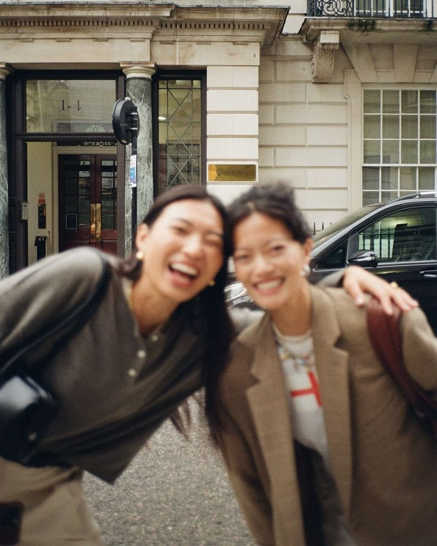

Our Story
We Created Unfiltered 20s
Your twenties can feel exciting, confusing, lonely, and overwhelming—all at once. We created Unfiltered 20s because real life rarely looks like the perfect version shown online. Here, we share relatable stories about grief, career changes, self-doubt, relationships, and personal growth. Our goal is not to give perfect answers, but to remind you that you are not alone and you do not need to have everything figured out.